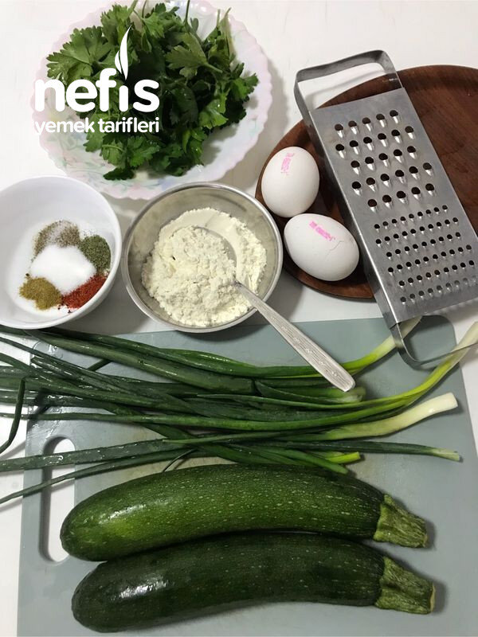

🍽️ 2-4 kişilik⏱️ Hazırlık: 15 dk🔥 Pişirme: 15 dk🏷️ Sebze Yemekleri🏷️ Kızartma Tarifleri
Malzemeler
- 2 adet kabak
- Yarım demet maydanoz
- 8-9 tane taze soğan
- 2 kaşık un
- 2 adet yumurta
- Karabiber, pulbiber, kimyon, tuz
- Kızartmak için zeytin yağı
Hazırlanışı
- Kabaklarımızı rendeleyip suyunu sıkıyoruz.
- Taze soğanları ve maydanozları ince doğruyoruz.
- Rendelenmiş kabağa;.
- Taze soğan, un, yumurta, baharatları ve tuzu ekleyerek karıştırıyoruz.
- Tavamıza yağı alıp ısıtıyoruz.
- Bir yemek kaşığı köfte harcından tavaya bırakıyoruz,.
- Tavamızın aldığı kadar kabağı birbirine değmeyecek şekilde kızartıyoruz.
- (atla kısmı pişince çevirmeyi unutmuyoruz).
- Pişen köfteleri yağını çekmesi için kağıt havluya çıkarıyoruz.
- Sıcak veya soğuk tüketebileceğimiz köftelerimiz hazır.
- İsterseniz ununu ve yumurtasını koymadan hazırlayıp dondurucuya koyabilirsiniz. Kışın da istediğiniz zaman çıkarıp hazırlayabilirsiniz. Afiyet olsun 😊.